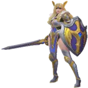
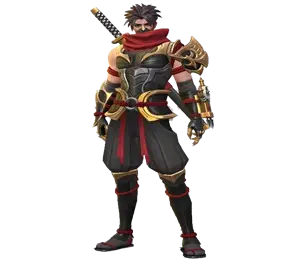
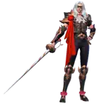
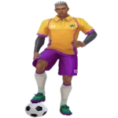

Obsidia Guide - Mobile Legends Bang Bang Full Build & Gameplay Tips
- By: Kilvia Ferreira Domingos. .
Are you ready to unleash the Goddess of Death in the Land of Dawn? This complete Obsidia guide for Mobile Legends: Bang Bang dives into her dark lore, unique skills, and powerful gameplay mechanics. Whether you’re a beginner or an experienced player, you’ll find strategies and builds that help you dominate the battlefield with Obsidia.
In this guide, we’ll explore Obsidia’s story, her abilities, her role as a Gold Lane Marksman, and the best ways to maximize her damage potential. Stay tuned until the end—you might discover hidden tactics that could change the way you play her forever.
Who Is Obsidia?
Obsidia is a fearsome Marksman in Mobile Legends: Bang Bang, known for her dark lore as the Goddess of Death. Once the ruler of the Abyss, she has returned from her sealed remnants to hunt the Spawns of Decay and reclaim her lost power.
- Class: Marksman
- Position: Gold Lane
- Main Stat: Physical Attack
With weapons forged from her own bones, Obsidia delivers ruthless damage on the battlefield. Her playstyle focuses on punishing enemies with sustained attacks, making her a lethal finisher in the late game.
In this guide, we’ll cover her story, stats, and strategies to help you master Obsidia and dominate the Gold Lane with precision and power.
How to Play with Obsidia in Mobile Legends
Master Obsidia’s journey from a fragile Gold Laner to a fearsome Goddess of Death. Learn smart skill upgrades and teamfight strategies step by step.
Early Game Strategy
In the early game, Obsidia is fragile but full of potential. Focus on the Gold Lane, where Marksmen like her can quickly stack equipment. Use Abyssal Bone Needle to poke enemies and safely build Bone Shards with your passive. Avoid unnecessary fights—your goal is to farm efficiently, especially Siege Minions, which grant extra gold. Stay close to your turret if pressured, and remember: patience now means power later.
Mid Game Strategy
By mid game, you should already have your first core items, making Obsidia more threatening. This is the time to rotate with your team. Use Hunt of Bone to initiate or catch out key enemy heroes, especially fragile targets. With Phantom Shadowmeld, you can chase or reposition to dodge danger. Remember, your damage is climbing fast—support your team in skirmishes, but don’t forget to keep farming between fights. The secret to success here is balance: farm smart, fight smart.
Late Game Strategy
In the late game, Obsidia transforms into a teamfight monster. Fully built, her Bone Shards shred through even the tankiest opponents. Positioning is everything now—stay in the backline, protected by your allies, and let Abyssal Bone Needle and empowered basic attacks rain devastation. Hunt of Bone becomes your ace: use it to stun the enemy carry or disrupt team coordination. At this stage, you are the win condition for your team, so play carefully but fearlessly. One well-timed ultimate can decide the entire match.
Role Recommendation: Gold Lane
Marksmen like Obsidia thrive in the Gold Lane because it allows them to farm faster and unlock their full power earlier. Though weak at the start, with the right items Obsidia becomes a relentless source of sustained damage, capable of carrying her team to victory.
Obsidia Skills Upgrade Priority - Mobile Legends: Bang Bang
Simple, friendly Obsidia skill priority: learn which abilities to upgrade first and why, explained step-by-step for players who need clear guidance.
Obsidia - Return to Bone: Passive
How it works (simple): Every time Obsidia hits enemies with attacks or skills she builds up Bone Energy. When enough Energy collects, it forms Bone Shards. When she uses basic attacks, those Bone Shards strike the target as extra physical damage. Think of it like stacking tiny missiles that explode on your next hits — they make your regular attacks much stronger over time.
Why this matters: This passive is the core of Obsidia’s damage identity — it amplifies her basic attacks and scales with her Physical Attack. Because it's a passive system, you do not upgrade it (it has no evolution). Just know it works in the background and benefits everything else you do.
Obsidia - Abyssal Bone Needle
How it works (simple): Obsidia fires a bone needle that hits enemies and triggers Return to Bone on the first hero struck — it deals significant physical damage and procs her stacks. Because it triggers the passive and has short cooldown, it’s your main damage tool.
Evolution Priority: Very High – Max this first to increase your consistent damage and make each basic attack far stronger.
Obsidia - Phantom Shadowmeld
How it works (simple): This ability gives a burst of movement speed (very short) so Obsidia can chase or reposition. It’s great for sticking to targets or escaping, but it doesn’t add much direct damage compared to Abyssal Bone Needle.
Evolution Priority: Medium – Upgrade after damage ability and ultimate. Useful for mobility, but lower priority for raw DPS.
Obsidia - Hunt of Bone (Ultimate)
How it works (simple): Obsidia fires Bones of Wrath to stun and pull to the enemy hero, tethers them and gives temporary Bone Shards. It enables close-range combat, prevents the enemy from being displaced and enhances Phantom Shadowmeld while active. This is your clutch, fight-changing ability.
Evolution Priority: High – Always take ultimate points when available (levels 4/8/12). It changes fights and gives strong control and burst windows.
Quick Priority Summary
Order to upgrade:
- Abyssal Bone Needle — Very High
- Hunt of Bone (Ultimate) — High (take at lvl 4/8/12)
- Phantom Shadowmeld — Medium
Obsidia Best Combos Mobile Legends
Combos can be simple—this guide walks you through Obsidia's best damage combos step-by-step, perfect for beginners who want clear, confident gameplay.
Laning Combos
Step 1: Abyssal Bone Needle
Use your 1st Skill to safely poke and farm. Think of it as “tap, don’t dive” — hit minions and enemies a bit at a time to build your passive so your basic attacks hurt more later.
Step 2: Phantom Shadowmeld
Use this short speed burst to close gaps or escape. If you’re nervous, practice using it to reposition after a poke rather than diving straight in.
Step 3: Hunt of Bone (Ultimate)
This is your fight-changer: stun, pull and gain bone shards. Use it when your team is ready or when you can lock a single target — don’t waste it.
Teamfight Combos
Step 1: Basic Attacks + Abyssal Bone Needle
Start by poking with basic attacks and your 1st Skill to stack passive safely. Imagine you’re chipping away at a wall—slow, steady damage.
Step 2: Phantom Shadowmeld
Reposition with your 2nd skill if enemies dive on you or if you need a better angle. It’s your safety net—use it calmly, not frantically.
Step 3: Ultimate + Clean Up
When the enemy is focused by your team, use Hunt of Bone to lock or stun a key target, then finish with empowered basic attacks. One well-timed ultimate wins fights.
Obsidia Strong Against Mobile Legends
Obsidia shines against heroes who rely on dashes and blinks. Her Ultimate cancels their mobility, turning agile threats into easy prey.
Freya
Freya depends on her leap and close-range burst. Obsidia’s Ultimate cancels her jump, forcing Freya into a straight fight she cannot easily win.
Hayabusa
Hayabusa relies on his shadows for mobility and damage. Obsidia locks him in place with her Ultimate, stopping his escape and punishing him hard.
Lancelot
Lancelot survives by chaining dashes to avoid damage. Obsidia’s Ultimate disables these dashes, leaving him exposed and unable to outplay her.
How to Counter Obsidia Mobile Legends
Obsidia can be vulnerable early, especially to heroes with strong lane pressure. Learn which heroes exploit her weaknesses effectively.
Counters
Countered By: Obsidia struggles during the early laning phase, making her vulnerable to Marksmen with strong early game like Bruno and Layla.
Bruno
Bruno’s early poke and critical strikes pressure Obsidia before she scales with items, making it difficult for her to farm safely or fight back effectively.

Layla’s long-range attacks can harass Obsidia during the early game, forcing her to play defensively and delaying her item progression.
Obsidia Pros and Cons - Mobile Legends: Bang Bang
✅ Pros
- High sustained damage with her Basic Attacks and Passive Bone Shards.
- Ultimate (Hunt of Bone) disables enemy mobility, making her strong against dash/blink heroes.
- Excellent scaling in the late game as she farms equipment quickly.
- Good lane control and harassment with Abyssal Bone Needle.
- Strong mobility and repositioning with Phantom Shadowmeld.
❌ Cons
- Weak early game; can be pressured by aggressive Marksmen or Fighters.
- Relies heavily on farming and equipment to reach full potential.
- Vulnerable to crowd control (CC) that can interrupt her combos.
- Requires careful positioning; misusing Ultimate or 2nd Skill can leave her exposed.
- Dependent on Passive stacks; basic attacks alone are weaker without them.
Conclusion
Mastering Obsidia in Mobile Legends requires patience, timing, and understanding her skill combos. Focus on stacking her Passive with safe pokes, use her Ultimate wisely to lock down key targets, and reposition effectively with Phantom Shadowmeld. While she may be vulnerable in the early game, her late-game damage and control can turn the tide of battles. With practice and smart positioning, you can dominate the Gold Lane and make Obsidia a powerful asset for your team.
Explore new skills with our featured heroes!

Leave Your Opinion!
Did you like our #############? Is there something you didn't understand or would like to suggest changes to? We invite you to join our comment section on the Alexandre Games Blog page. Feel free to express your opinion, clarify your doubts, and share your suggestions.
Click the button below to get started: